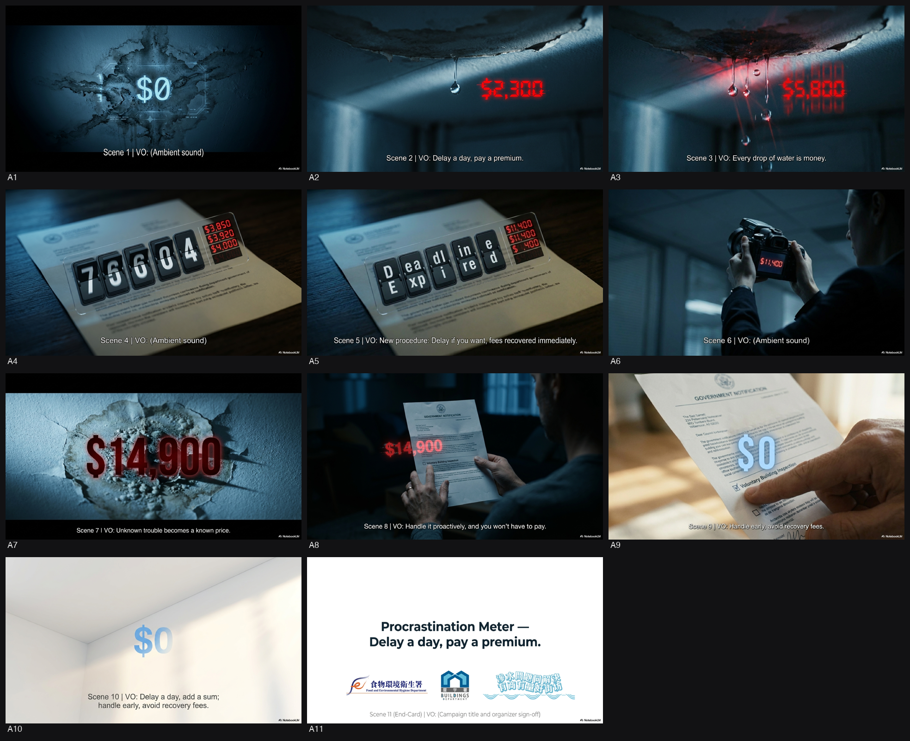
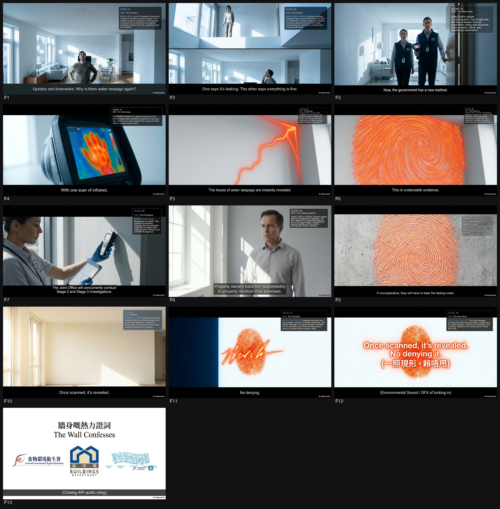

FEHD · Water Seepage APIs
🏠Phase 0 → VID 1 之間嗰幾日，諗到乜就入低，撳「＋ 加入」累積（VID 1 啟動委員會時一齊餵 AI）。
1. Background（背景）
為配合 2025
年《施政報告》公佈的措施，由食物環境衞生署（FEHD）與屋宇署（BD）成立的聯合辦事處
（聯辦處/JO）將推出處理私人樓宇滲水的新調查及測試程序
[1]。政府希望透過新一輯電視及電台政府宣傳短片（API），向公眾宣傳這些旨在更有效解
決滲水問題的加強措施 [1]。
2. Objective（目標）
提升公眾對聯辦處即將推出的新滲水調查程序及加強措施的認知；強調業主妥善保養物業及
防止滲水的責任
[2]。具體需向受眾解釋精簡後的調查程序（包括使用紅外線熱成像分析及同步進行第二和
第三階段調查），並促使收到「通知信」的業主主動及時進行檢驗和維修 [2]。
3. Key Message（核心訊息）
妥善保養物業、防止滲水，永遠是業主的責任
[3]。聯辦處在第一階段已引入紅外線探測以加快尋找滲水源頭；若發出「通知信」後業主
仍未能在限期內完成維修，聯辦處將同步展開第二及第三階段調查，並會向不合作的業主追
討相關測試費用 [3, 4]。
4. Deliverables（交付物）
* TV API： 一條 30
秒電視宣傳短片，包含粵語（配繁體中文書面語字幕及手語）及英語（配英文字幕及手語）
兩個版本 [5, 6]。需以 HDCam、RED ONE 或同等格式拍攝，輸出 16:9 (HD) XDCAM HD422
MXF 檔案 [5, 6]。手語視窗需佔畫面六分之一，位於右下角 [7, 8]。
* Radio API： 一條 30
秒電台宣傳聲帶，包含粵語、英語（獨白形式）及普通話（要求一級乙等水平）版本
[9-11]。
* 其他：
中英文口號（Slogan）、腳本、分鏡圖（Storyboard）、配音、原創或已獲版權許可的背景
音樂 [10, 12-15]。
* （海報/平面廣告：資料不足，投標文件未列為必做項目）。
5. Timeline（時間表）
* B (Briefing 簡介會): 2026-05-29 (必須於 2026-05-27 15:00 前提交回條)
[16, 17]。
* D (Deadline 遞交死線): 2026-06-17T15:00 (香港時間) [17, 18]。
* P (Presentation 提案日): 2026-06-23 (以粵語進行) [19, 20]。
* Milestone: 2026-06-29 批出合約；2026-07-31 完成 Final Cut；2026-08-03
遞交廣播機構 [20]。
📅 日程（製作里程，報明星拍攝期用）
📑 要填嘅表（1 張）· Master Reply
真表頁（掃 PDF 表頭定位,已剔走條款 text）。🟦直 🟨橫。
程式自動揀真表頁 + render → 插入對應 Master Reply GSlide 做 background（毋須手開 panel 貼頁碼）。render 完開 GSlide 直接填 → panel export（認 folder）。
AI 讀每張表要填乜 → 對返 Master GSheet「公司資料」→ 寫入 Fill_2605_FEHD_Water Seepage APIs tab（值你 copy 去填；⚠️需人手＝價錢/簽名要自己填）。GAS 直出，唔靠部 Mac。
開 Form GSlide panel 貼頁碼 render 做 background → 人手填。
🎞️ 開 FEHD Form GSlide⚠️ 製作要求（5 項）
讀標書判定。剔=要 / ✕=唔使；明星·吉祥物 Preferred/無Pref；動畫 2D/3D/無Pref。撳頁碼睇引文。
🔬 Research 背景調查
FEHD 未做外部 Gemini / Perplexity research。
完整創意方案見 Part 1 Brief 撮要 + NBLM notebook:
https://notebooklm.google.com/notebook/fdeb3993-147b-48f4-b454-cdce2c7a4ba6
以下係一份以 FEHD 宣傳片 / API 做背景研究角度整理嘅重點，聚焦「Water Seepage APIs」喺香港而家點解成為政府宣傳同政策重點。
---
① 議題背景：點解政府而家要做、政策脈絡
- 水滲（water seepage）係香港長期民生投訴之一，涉及住宅單位天花滴水、牆身滲水、霉菌、衛生滋擾，同時又容易引發樓上樓下糾紛，政府需要用更快嘅機制去減少積壓個案同社區摩擦。[6][8]
- 政府已經將問題放入2025 Policy Address 跟進：行政長官提出要由 Joint Office 加強檢測流程，並喺2026 年中推出試行安排，目標係加快調查、縮短輪候時間、提升投訴處理效率。[2]
- 新安排背後嘅政策邏輯係：由政府「代查」轉向「先由懷疑源頭單位負責自查／修理」，即係先用更快方法篩走明顯個案，再將成本同責任更明確咁推返畀源頭單位業主。[2][3][5]
- 政府同時想減少 Joint Office 以往需要花大量時間入單位做全面調查嘅情況，因為滲水投訴處理時間長、程序重、而且經常因為無法及早找到源頭而拖延。[1][3]
- 另一個政策脈絡係糾紛調解 / 社區協作：FEHD 近年推動物管公司參與處理滲水，並聯同環境及生態局、律政司喺2025 年 7 月推出社區調解試行計劃，反映政府想將部分個案由「執法式處理」轉向「協調式解決」。[2]
---
② 關鍵事實 / 數據 / 日期
- 2025 年《施政報告》提出，政府會喺2026 年中由 Joint Office 推行pilot scheme，改善水滲檢查及測試程序。[2]
- 新流程重點係喺Stage I 同時加入 infrared thermography（紅外線熱成像） 及 electronic moisture meter（電子濕度計），用作初步判斷滲水來源。[2][3]
- 如果有合理理由相信滲水來自上層單位，Joint Office 會向上層業主發出 Notification Letter，要求其自行檢查及修理，並喺指定限期內完成。[2]
- 若滲水持續，Joint Office 會將Stage II 同 Stage III 專業調查同時進行，以加快確定源頭。[2]
- 一旦確認源頭屬上層單位，而又屬公共衛生滋擾，Joint Office 可按《Public Health and Municipal Services Ordinance》（Cap. 132）發出 Nuisance Notice。[2][6]
- SCMP 引述政府消息指：若上層業主喺通知後28 日內都唔處理，最少要承擔約 HK$17,000 的檢測費；政府並計劃將測試費追返畀造成滋擾嘅單位業主。[5][3]
- 1823 資料指出，如違反 Nuisance Notice，最高可被罰款 HK$25,000，如持續違規另有每日 HK$450；若再申請到法院 Nuisance Order 而不遵從，最高可罰 HK$50,000，另有每日 HK$600。[6]
- Buildings Department 指出，多數水滲成因係水喉、潔具或排水喉缺陷，通常屬可修復的樓宇維修問題。[8]
- RTHK 報道政府預計新安排可於2026 年中生效，並提到符合資格、收到改善通知嘅業主可申請 Buildings Department loans 同 Urban Renewal Authority subsidies 支援維修。[3]
---
③ 相關官員 / 單位（真名銜、部門）
- Food and Environmental Hygiene Department (FEHD)：主責民生滋擾投訴、與 Buildings Department 共同運作 Joint Office for Investigation of Water Seepage Complaints。[2][6]
- Buildings Department (BD)：與 FEHD 共同負責聯合辦公室，並提供水滲 FAQ、調查流程及技術資料。[2][8]
- Joint Office for Investigation of Water Seepage Complaints：實際執行調查、發通知、跟進滋擾通知及法律程序的核心單位。[2][6]
- Chief Executive 李家超（John Lee Ka-chiu）：2025 Policy Address 提出加快水滲處理試行方案，屬政策源頭人物。[2]
- Environment and Ecology Bureau：與 FEHD、律政司合作推出Pilot Scheme on Community Mediation，將水滲爭議納入調解框架。[2]
- Department of Justice：與 FEHD、環境及生態局合作推動社區調解，反映政府希望用非訴訟方式減少糾紛。[2]
- Legislative Council：2025 年 10 月議員曾就樓宇水滲機制作出討論，反映議題具持續政治及民生關注度。[10]
- Hong Kong Housing Authority (HKHA)：雖然主要處理公屋，但亦被政府回應問及水滲問題，顯示議題並非只屬私人樓宇。[9]
---
④ 受眾關注點 / 社會 sentiment
- 最關心係「快唔快」同「邊個負責」：居民最常見嘅痛點係明明有滴水，但調查慢、來回多、難以證明源頭，結果問題拖住幾個月甚至更耐。[1][6][8]
- 上層業主成本會否上升係一個焦點：政府新安排明顯係將部分檢測責任同費用推向疑似源頭單位，社會上容易出現「係咪迫業主埋單」嘅觀感。[3][5]
- 支持聲音主要來自長期受滋擾居民：因為新流程可減少等待、避免政府先做大量高成本調查、亦有望加快迫使責任方修理。[2][3]
- 擔心聲音集中喺兩點：一係紅外線 / 濕度計初判會否出現誤判；二係即使發出通知，上層業主是否真係肯配合，否則程序會否只係換咗一套更快但未必更有效嘅流程。[2][3]
- 物管公司與業主立案法團通常希望政府提供更清晰指引，因為滲水處理牽涉入屋安排、業主溝通、維修協調同記錄保存；PMA Scheme 顯示政府亦期望物管成為第一線協調者。[2][7]
- 社會整體情緒可以概括為：「支持加快，但唔想變成另一種轉嫁責任」，即係市民接受效率提升，但希望程序公平、證據清楚、責任分配明確。[3][5][6]
---
⑤ 香港喺呢件事嘅角色
- 香港政府唔係只做「監管者」，而係同時扮演調查者、協調者、執法者、調解推動者四重角色；呢點由 FEHD + BD 的 Joint Office 最明顯體現。[2][6]
- 香港嘅角色亦係樓宇密集城市的治理樣本：高密度居住令單位之間滲水問題更易社區化、常態化，所以政府需要一套兼顧技術、法律、行政效率嘅機制。[
【來源 Sources】
- https://www.thestandard.com.hk/news/article/329301/Govt-to-launch-faster-water-seepage-investigation-workflow-in-mid-2026
- https://www.waterseepage.gov.hk/en/water_seepage/pilot_scheme.html
- https://news.rthk.hk/rthk/en/component/k2/1851050-20260414.htm
- https://ask.legal/en/blog/water-dripping-from-the-ceiling-in-hong-kong---legal-remedies-responsibilities-practical-steps
- https://www.scmp.com/news/hong-kong/society/article/3350088/hong-kong-landlords-face-hk17000-inspection-bill-over-ignored-water-seepage
- https://www.1823.gov.hk/en/faq/how-to-settle-water-seepage-in-residential-flats
- https://www.pmsa.org.hk/file/3385/%E3%80%8C%E8%99%95%E7%90%86%E7%89%A9%E6%A5%AD%E6%BB%B2%E6%B0%B4%E6%83%85%E6%B3%81%E3%80%8D_%E6%8C%87%E5%8D%97_%E8%8B%B1_16Oct.pdf
- https://www.bd.gov.hk/en/resources/faq/index_water_seepage_problem.html
- https://www.info.gov.hk/gia/general/202601/2
以下是為廣告創作團隊準備的『官方用語對照表』，確保用詞準確：
---
『官方用語對照表』
1. 部門 / 辦事處
* 食物環境衞生署 (FEHD)
* 官方英文全名：Food and Environmental Hygiene Department
* 官方網址：[https://www.fehd.gov.hk/tc_chi/](https://www.fehd.gov.hk/tc_chi/)
* 屋宇署 (BD)
* 官方英文全名：Buildings Department
* 官方網址：[https://www.bd.gov.hk/tc/index.html](https://www.bd.gov.hk/tc/index.html)
* 聯合辦事處 (聯辦處/JO)
* 官方英文全名：Joint Office (JO)
* 官方網址：(此為食物環境衞生署與屋宇署共同成立的辦事處，通常在其各自部門網站或相關新聞稿中提及，沒有獨立官方網址)
2. 計劃 / 政策 / 程序 / 法例 / 措施 / 機構
* 《施政報告》
* 官方英文名稱：Policy Address
* 處理私人樓宇滲水的新調查及測試程序
* 官方英文名稱：New investigation and testing procedures for handling water seepage in private buildings
* 加強措施
* 官方英文名稱：Enhanced measures
* 精簡後的調查程序
* 官方英文名稱：Streamlined investigation procedures
* 紅外線熱成像分析
* 官方英文名稱：Infrared thermography / Infrared thermal imaging analysis (文件中使用 "infrared thermography")
* 同步進行第二和第三階段調查
* 官方英文名稱：Parallel conduct of Stage II and Stage III investigations
* 通知信
* 官方英文名稱：Notification Letter
* 追討相關測試費用
* 官方英文名稱：Recover the examination costs incurred
* 妥善保養物業及防止滲水的責任
* 官方英文名稱：Responsibilities of property owners in maintaining their properties and preventing water seepage
* 私人樓宇滲水
* 官方英文名稱：Water seepage in private buildings
* 電視及電台政府宣傳短片 (API)
* 官方英文名稱：Television and radio Announcements in the Public Interest (APIs)
* 公務員事務局法定語文事務部
* 官方英文名稱：Official Languages Division of the Civil Service Bureau
3. 專有名詞 / 技術詞
* 手語
* 官方英文名稱：Sign language (文件提及「香港手語」Hong Kong Sign Language)
* 繁體中文書面語
* 官方英文名稱：Traditional Chinese written language
* 一級乙等水平 (普通話水平測試)
* 官方英文名稱：Grade 1B (Putonghua Shuiping Ceshi)
* 國家語言文字工作委員會普通話水平測試
* 官方英文名稱：Putonghua Shuiping Ceshi (State Language Commission's Putonghua Proficiency Test)
* 口號
* 官方英文名稱：Slogan
* 腳本
* 官方英文名稱：Scripts
* 分鏡圖
* 官方英文名稱：Storyboards
* 配音
* 官方英文名稱：Voice-over
* 背景音樂
* 官方英文名稱：Background music
* HDCam, RED ONE, 16:9 (HD) XDCAM HD422 MXF 檔案
* 這些是行業標準的拍攝格式和輸出檔案格式，無須特別翻譯，直接使用即可。
* Station copies (指提交給廣播機構的宣傳片副本)
* 中文慣用說法：廣播機構副本 / 送播版本
* Off-line and on-line editing
* 中文慣用說法：離線剪接及在線剪接
* Audio recording, sound mixing, special sound effects
* 中文慣用說法：錄音、混音、特別音效
* Creative and Copywriting
* 中文慣用說法：創作及文案
* Production Logistics
* 中文慣用說法：製作統籌
* Post-Production
* 中文慣用說法：後期製作
* Voice-Over Talents
* 中文慣用說法：配音員
4. 常見會錯譯 / 易混淆的地方
* 「聯辦處」：應使用「聯合辦事處」或其英文縮寫「JO」，避免自行翻譯為其他名稱。
* 「API」：應使用「政府宣傳短片」或「電視及電台政府宣傳短片」，避免只稱「宣傳片」而失去政府性質。
* 「滲水」：官方英文為 "water seepage"，避免使用 "water leakage" (漏水) 或 "water penetration" (滲透)，雖然意思相近，但 "water seepage" 是此情境下的官方用語。
* 「業主」：官方英文為 "property owner"，避免使用 "landlord" (業主/房東，通常指租賃關係中的一方)。
* 「保養物業」：官方英文為 "maintaining their properties"，避免使用 "pr
💭 5W1H 創意 Provocation
9 條尖問題，逼 agency 諗加咩 element / 風格，落橋前消化。
5W1H 創意 Provocation — FEHD
WHO — 對邊個講 + 佢而家點
- Q1 如果呢個 message 只可以打動「最唔關心、最 cynical」嗰個觀眾 —— 要加咩一個 element(畫面/聲/人物/情境)先 3 秒內 hook 住佢、令佢唔 skip?
→ 加入極端特寫嘅天花水珠、霉菌斑點畫面，配合放大咗嘅滴水聲效 (ASMR-style)，直接呈現問題嘅滋擾感。
- Q2 呢班受眾平時食開咩視聽語言(平台/節奏/語氣)?要 adapt 邊種佢熟悉嘅風格,先入到腦而唔似「政府嘢」?
→ Adapt 社交平台「懶人包」/ explainer video 風格，用大量 motion graphics、快節奏剪接、pop-up 關鍵字 (e.g.「HK$17,000」、「28 日」) 取代傳統劇情演繹。
WHAT — 收窄到一個 + 證據
- Q3 成個 campaign 只准觀眾記住一個 element(一個畫面 / 一個 visual device / 一句)—— 你揀咩?點解係佢?
→ 揀「紅外線熱成像」(infrared thermography) 畫面做 visual device，因為佢視覺上新鮮、有科技感，直接象徵新流程「更快、更科學」嘅核心轉變，容易被記住。
- Q4 客戶 key message 好抽象,要用咩具體 element(真場面/真數字/真人/真物)去「show 唔 tell」,令佢落地、唔流口號?
→ 加入 Joint Office 人員手持「紅外線熱成像儀」同「電子濕度計」嘅真實工作場景 shot，並疊加「HK$17,000」、「HK$25,000」等真實罰則數字，將抽象政策具象化。
WHY — 點解信 + 情感
- Q5 觀眾點解要信 / 關佢事?要加咩證據 element 或情感共鳴 element,先由「事不關己」變「同我有關」?
→ 加入由行政長官李家超喺《2025 年施政報告》發言嘅真實片段 (archive footage)，以建立政策源頭嘅權威性；再配上不同單位業主（受影響 vs 疑似源頭）嘅真實表情特寫。
WHEN / WHERE — 出街情境
- Q6 呢條嘢實際喺邊度、咩狀態被睇到(電視 prime / 車廂無聲 / 手機 scroll / 戶外經過)?要 adapt 咩風格(有聲冇聲 / 首 3 秒 / 大字 / 節奏)先食到當下情境?
→ 針對手機 scroll / 車廂無聲情境，adapt 字幕主導 (caption-led) 風格，用特大、置中嘅 graphic title card 貫穿全片，確保無聲狀態下仍能完整傳達核心資訊。
- Q7 出街時間(事件前/中/後)decide 調子係「預告期待」定「總結成就」?要加咩 element 配合呢個時間感?
→ 調子係「預告期待」，因為試行計劃喺 2026 年中先推行。要加入明確嘅日期 graphic：「2026 年中」，並使用 forward-moving / building up 節奏嘅配樂，營造「即將改變」嘅感覺。
HOW — 風格 + 差異化
- Q8 同類(同部門/同題材)政府片嘅「安全做法」係咩?要 adapt / 升級邊種風格 element(質感/節奏/transition/配樂/美術流派),先做到「框內最高質」而唔悶?
→ 安全做法係溫情劇式演繹。要升級成帶有輕微懸疑感 (light suspense) 嘅紀實風格，例如用手搖鏡頭、冷色調、更快的 cut-to-cut 節奏，去呈現「調查」同「尋找源頭」嘅過程。
- Q9 要加咩一個 unexpected element(反差/新 visual device/新手法),先同部門過往 campaign 拉開距離、唔似翻炒,但又唔踩紅線?
→ 加入一個 split-screen (分割畫面) 的 visual device，一邊係樓下單位受滋擾嘅畫面，另一邊同時展示樓上單位喉管嘅紅外線熱成像圖，用視覺對比直接呈現「因」與「果」。
📺 ISD API Ref 相類政府舊片
【呢條 brief 判定】目的:勸喻/警示/形象/成就(propaganda) 題材:樓宇滲水/消防
【同目的(勸喻/警示)ISD 慣性】主開頭 真人/講者(88%);格式率 旁白55% 熒幕蓋字100% 標誌結尾88% CTA66% 感嘆88% 三段式·0%;慣用結尾 eTrafficTicket.gov.hk, 電子交通告票平台應用程式標誌, 積水要提防 蚊患無處藏, 食物環境衞生署標誌
【對口 ISD 舊作借鏡(同 目的×題材,參考佢點寫,唔好照抄,要創新)】
— 積水要提防 蚊患無處藏 [勸喻/警示 | 公共衞生]
女旁白： / 防蚊小教室！ / 熒幕蓋字： / 防蚊小教室 / 食物環境衞生署標誌 / 女旁白： / 蚊子可以傳播很多疾病 / 熒幕蓋字： / 登革熱 / 基孔肯雅熱 / 女旁白： / 而積水，是蚊子滋生的地方 / 想避免，就要徹底清除家居積水 / 例如盆栽底碟 / 花瓶內的水，至少每星期換一次 / 花瓶內壁亦要洗刷 / 女旁白： / 容易積水的垃圾和雜物，要妥善棄置 / 去水位也要清理 / 女旁白： / 前往叢林或蚊患較嚴重的地區 / 應穿着淺色長袖衣物 / 以及使用驅蚊劑 / 熒幕蓋字： / 叢林／蚊患較嚴重地區 / 女旁白： / 積水要提防 蚊患無處藏 / 熒幕蓋字： / 預防登革熱和基孔肯雅熱 / 積水要提防 蚊患無處藏 / 食物環境衞生署標誌
— 繳交 4-6月季度差餉及/或地租 [勸喻/警示 | 差餉地租]
男旁白： / 本季的差餉地租通知書已經寄出 / 通知書已計算差餉寬減 / 地租並無寬減 / 緊記在4月30日或之前繳交 / 否則須繳付逾期附加費 / 通知書已列明今年重估的「應課差餉租值」 / 若有反對，必須在五月底前以書面提出 / 如若尚未收到通知書 / 請致電查詢熱線2152 0111 / 通知差餉物業估價署 / 熒幕蓋字： / 差餉及地租 準時繳交免罰款 / 差餉物業估價署 標誌 電子差餉地租單服務 標誌 / 登記電子差餉地租單服務 / 查詢熱線：2152 0111 www.rvd.gov.hk
— 遠離賭博 咪「賭」亂自己人生 [勸喻/警示 | 其他]
男旁白： 你賭？他也賭？ / 不停地賭，甚至參與網上非法賭博。 / 除了輸錢、還輸掉家庭、輸掉朋友、輸掉前途，值得嗎？ / 戒賭吧。 / 遠離賭博，別「賭」亂自己人生。 / 熒幕蓋字： 遠離賭博 咪「賭」亂自己人生！ / 男旁白： 立即致電戒賭熱線183 4633 / 熒幕蓋字： 戒賭熱線 / 183 4633 / 遠離賭博 咪「賭」亂自己人生！ / 民政及青年事務局標誌 / 政府資助計劃標誌 / 平和基金標誌
— Prohibition of possession of alternative smoking products [勸喻/警示 | 禁煙/控煙]
旁白：另類吸煙產品進口和銷售禁令已實施超過三年 / 熒幕蓋字：另類吸煙產品的禁令 / 進口 / 銷售 / 旁白：由4月30日開始 / 政府將進一步禁止在公眾地方管有另類吸煙產品 / 熒幕蓋字：指明另類吸煙產品包括： / 電子煙煙彈 / 煙油 / 加熱煙支 / 草本煙 / 旁白：在公眾地方吸食另類煙會被視作管有並違法 / 熒幕蓋字：吸食 / 管有 / 旁白：可被定額罰款三千元 / 熒幕蓋字：罰款 $3,000 / 旁白：管有超額另類煙或作商業用途 / 更可被判監！ / 熒幕蓋字：最高刑罰 / $50,000 / 判監六個月 / 旁白：大家切勿以身試法！ / 熒幕蓋字：禁止在公眾地方管有指明另類吸煙產品 / 將於2026 年 4 月 30 日生效 / 衞生署控煙酒辦公室標誌 / www.taco.gov.hk
— 2026年人口普查 – 做問卷前要記緊 核實統計員身份 [勸喻/警示 | 防騙]
阿普：2026年人口普查現正進行中 / 上門協助住戶完成問卷的統計員 / 會穿着印有統計處徽號的灰色背心制服 / 阿查：佩帶統計員身份證 / 熒幕蓋字：印有統計處徽號的灰色背心制服 / 統計員身份證 / 阿查：有懷疑，請立刻致電18 2026核實統計員身份 / 提防騙子！ / 認清來電號碼「18 2026」 / 和短訊發送人「#C&SD」 / 熒幕蓋字：18 2026 / #C&SD / 阿普：緊記！統計員不會搜集你的身份證、 / 銀行戶口或信用卡資料 / 熒幕蓋字：身份證 / 銀行戶口 / 信用卡資料 / 2026年人口普查標誌 / 全年進行 / 做問卷前要記緊 核實統計員身份 / 政府統計處標誌 / 普查熱線：18 2026 / www.census2026.gov.hk
— 帶超額煙酒入境不報關 罰款最少HK$5,000甚或坐監 [勸喻/警示 | 盛事旅遊]
陳豪： / 我收到一則重要消息 / 在沒有向海關申報下帶超額煙酒入境 / 罰款已提高至港幣五千元 / 熒幕蓋字： / 罰款 HK$2,000 -) HK$5,000 / 陳豪： / 還有五倍稅款! / 熒幕蓋字： / 5倍稅款 / 龔嘉欣： / 那全港市民和入境旅客都要留意 / 陳豪： / 沒錯 / 涉及私煙相關罪行的最高刑罰 / 熒幕蓋字： / 私煙相關罪行 / 龔嘉欣： / 已經提高至罰款港幣二百萬 / 及監禁七年 / 熒幕蓋字： / 最高罰款（港幣）100萬 -) 200萬 / 最長監禁期2年 -) 7年 / 陳豪： / 任何人都不應以身試法！ / 熒幕蓋字： / 帶超額煙酒入境不報關 / 罰款最少HK$5,000甚或坐監 / 《應課稅品條例》（第109章）修訂 / 已於2025年9月19日生效 / 香港海關標誌
Creative Concept 創作概念: JO 將通知信重塑為可即時標註嘅工程圖則，業主手持圖則圈出問題後，畫面 Match Cut 回真實維修現場；強調「證據在手＝話事權在手」，透過雙軌進度條視覺化「你一動手，程序即加速」，確立專業、迅捷嘅品牌角色。
TV API Storyboard(30 秒,12 格):
| 格號 | 畫面(visual) | 廣東話對白/旁白(標明邊個讀) |
|---|---|---|
| 1 | 業主 POV，推門入屋，牆身水漬特寫，環境音煩躁。 | 業主（自言自語）：呢滴水，煩到爆。 |
| 2 | 門縫滑入 A4 工程圖則，無信封，抬頭 "Infrared Thermography – Joint Office (JO)"。 | （音效：紙張輕滑聲） |
| 3 | 手持圖則，紅筆懸停於熱感色塊上方。 | 旁白（JO專業語氣）：收到通知信，證據已經喺你手。 |
| 4 | 紅筆快速畫圈，熱源被紅線鎖定。 | 旁白：源頭，一圈即明。 |
| 5 | Match Cut：紅圈同時出現喺真實牆身。 | （音效：確認聲） |
| 6 | 畫面下緣雙色進度條出現，藍／紅兩軌靜止。 | 旁白：Stage II 同 Stage III。 |
| 7 | 業主手指輕點圖則，雙軌同時啟動並快速填滿。 | 旁白：你一行動，程序同步加速。 |
| 8 | 冷色水漬紋理由邊緣向中心收縮，消失。 | 旁白：拖得越耐，費用越高。 |
| 9 | 業主撥打電話，維修師傅帶工具入畫。 | 業主（對電話）：有圖則，嚟度睇。 |
| 10 | 師傅用工具對準紅圈位置，雙軌完成填滿。 | 旁白：自己搞掂，成本最精明。 |
| 11 | 業主滿意點頭，畫面轉為明亮暖調。 | 業主（微笑）：搞掂。 |
| 12 | 黑底白字：「證據喺手，漏喺你控」。JO 標誌 + 網址。 | 旁白：聯合辦事處（JO）。 |
概念清晰且具創新性，將通知信轉化為互動工具，有效傳達主動權與效率，但說服力與記憶點可再強化。
以工程圖則結合Match Cut視覺化證據與進度，精準傳遞主動解困訊息並展現服務創新，惟ESG元素著墨較少。
未有概念全文
訊息清晰具震懾力，科技應用與後果呈現具創意與說服力。
以熱像儀結合金錢損失視覺化有效傳遞測漏技術與阻嚇訊息，惟說服力稍欠數據支撐且ESG元素薄弱。
Creative Concept 創作概念: JO 用紅外線熱成像報告將模糊水漬轉化為清晰工程圖則，業主用紅筆圈出源頭後，雙軌進度條同步推進；透過「一圈即行動」的視覺對比，展示業主掌握話事權，就能加速程序、控制成本，避免延誤引致嘅更大損失。
TV API Storyboard(30 秒,12 格):
| 格號 | 畫面(visual) | 廣東話對白/旁白(標明邊個讀) |
|---|---|---|
| 1 | 全黑。突然亮起冷灰水漬紋理，邊界模糊，隨輕微水滴聲擴散。 | （環境音：滴水聲） |
| 2 | 業主 POV，手持冷調手機，對住潮濕牆身，畫面微晃。 | 業主（喃喃）：又滲水？ |
| 3 | 冷暖對比切：左側灰暗水漬，右側切入橙紅熱圖，漸層清晰。 | 旁白（JO專業語氣）：聯合辦事處嘅紅外線熱成像。 |
| 4 | 熱圖疊加 A4 工程圖則，抬頭顯示 "Infrared Thermography – Joint Office (JO)"。 | 旁白：將水漬變工程圖則。 |
| 5 | 業主手持紅色 Marker，筆尖接觸圖則邊緣。 | （音效：清脆 marker 聲） |
| 6 | 紅筆快速一圈，圖則上熱源點被紅圈鎖定。 | 旁白：一圈。 |
| 7 | Match Cut：紅圈同時出現在真實牆身相同位置。 | （音效：確認低沉聲） |
| 8 | 雙軌 UI 出現：藍軌（JO Stage II）、紅軌（Stage III），由業主手指輕點啟動。 | 旁白：程序同步進行。 |
| 9 | 雙軌同時狂飆填滿，視覺節奏加速。 | 旁白：你一動，調查就快。 |
| 10 | 邊緣冷色水漬紋理迅速收縮消失，轉為清晰線條。 | 旁白：成本自己控。 |
| 11 | 業主打電話，維修師傅入畫，雙軌完成。 | 業主（對電話）：即刻嚟。 |
| 12 | 黑底白字：「圖喺手，漏喺你控」。JO 標誌 + 網址。 | 旁白：聯合辦事處（JO）。 |
概念清晰且視覺化強，將技術流程轉化為易懂的「一圈即控」行動，有效傳遞業主主導權與效率訊息，但說服力與記憶點可再強化。
以紅外線熱成像疊加工程圖則及雙軌進度條視覺化呈現JO服務流程，訊息精準且具創新說服力，惟ESG元素僅隱含於減損節能而欠具體闡述。
Creative Concept 創作概念：以「紅外線箭咀」作為清晰導航，貫穿整個片段。開首一刻紅外線即鎖定漏源，隨即展示「通知信」有效期倒數；若業主錯過時限，畫面即分裂為堆疊文件與費用結算單，視覺化「程序同步追討」的後果。整段以「一秒安心 vs. 持續麻煩」作強烈對比，驅使業主即時行動。
TV API Storyboard(30 秒,12 格):
格號 | 畫面(visual) | 廣東話對白/旁白(標明邊個讀)
---|---|---
1 | 極近特寫：手緊揸通知信，紙張微皺，背景模糊滲水牆。 | （無對白）
2 | 手微顫一下，信封上「聯辦處」Logo 清晰。 | 旁白（男，專業）：收到通知信……
3 | 手鬆開，畫面急速拉遠，牆上紅外線熱點閃一下。 | 旁白：第一階段紅外線已經鎖定源頭。
4 | 橙色箭咀彈出，精準指向最熱點，發出「嗶」聲。 | 旁白：一眼見到，唔使估估下。
5 | 箭咀旁浮現半透明標籤：「$0 檢測費」。 | 旁白：限期內自修，零檢測費。
6 | 時間進度條由綠轉橙，快速倒數。 | 旁白：拖得耐……
7 | 畫面瞬間「撕裂」，左邊箭咀變暗，右邊湧出堆疊文件、測試清單及費用結算單。 | 旁白：程序同步展開。
8 | 費用結算單由模糊變清晰，紅字「測試費用自付」。 | 旁白：測試費用就要自己畀。
9 | 箭咀再次閃現，鎖定同一熱點，旁邊標籤轉為紅色。 | 旁白：一箭鎖漏，拖過時限程序就追到。
10 | 畫面切回業主手持通知信的特寫，手指輕觸「自修」選項。 | 旁白：自己決定，源頭自己修。
11 | 0.5 秒 freeze frame：箭咀鎖定＋「咔」聲音效。 | （無對白）
12 | 黑底白字 super：聯辦處 Logo + 「一箭鎖漏，拖過時限程序就追到。」 | 旁白：聯辦處，專業斷症，助你履行業主責任。
概念清晰具創意，以視覺化程序強化訊息，但說服力與記憶點可再提升。
以紅外線箭咀視覺化檢測程序並清晰傳達限時自修免付費訊息，創意執行精準且具說服力，惟ESG元素著墨較少。
Creative Concept 創作概念：以「透視牆」為視覺主軸，紅外線成為業主與鄰里之間的「無聲橋樑」。片中先呈現和諧走廊（樓上樓下無人敲門），再切入紅外線箭咀鎖定漏點，讓業主在投訴發生前已掌握證據與解決方案。強調「預警」而非「監控」，同時回歸「業主責任」法律基礎。
TV API Storyboard(30 秒,12 格):
格號 | 畫面(visual) | 廣東話對白/旁白(標明邊個讀)
---|---|---
1 | 走廊中景，和諧寧靜，門縫無人影。 | （無對白）
2 | 特寫門鈴，無人按動。 | 旁白（男，專業）：樓上樓下未投訴之前……
3 | 畫面切至室內滲水牆，熱圖暖橙色浮現。 | 旁白：聯辦處紅外線已經見到源頭。
4 | 箭咀彈出，鎖定漏點，發出「嗶」聲。 | 旁白：一秒斷症，唔使等到鄰里敲門。
5 | 畫面一分為二：左邊箭咀鎖定，右邊是和諧鄰里聊天畫面。 | 旁白：修好你層，上下安心。
6 | 箭咀旁浮現標籤：「$0 檢測費」。 | 旁白：趁早自修，零檢測費。
7 | 畫面切回單一畫面，箭咀持續閃爍。 | 旁白：收到通知信，就係你嘅責任。
8 | 時間進度條出現，由綠轉橙。 | 旁白：拖得耐，程序同步展開。
9 | 畫面右下角彈出費用結算單，紅字「測試費用自付」。 | 旁白：到時費用就要自己畀。
10 | 箭咀再次閃現，旁邊標籤轉紅。 | 旁白：一箭鎖漏，拖過時限程序就追到。
11 | 0.5 秒 freeze frame：箭咀鎖定＋「咔」聲。 | （無對白）
12 | 黑底白字 super：聯辦處 Logo + 「一箭鎖漏，拖過時限程序就追到。」 | 旁白：聯辦處，專業斷症，助你履行業主責任。
概念清晰聚焦預警與責任，創意執行良好，但說服力與記憶點略顯常規。
以紅外線透視牆視覺化「預警勝於補救」訊息清晰且具創意，有效傳遞業主責任與免費檢測誘因，惟說服力稍欠情感共鳴，ESG元素僅間接體現於減少糾紛資源浪費。
未有概念全文
比喻精準有力，視覺化強，能有效提升市民對滲水問題的警覺性與行動意願。
以MRI醫療比喻滲水檢測極具創意與說服力，訊息清晰且貼合紅外線技術應用，惟ESG元素僅隱含於預防性維修而欠具體措施。
Creative Concept 創作概念:以「通知信與熱成像圖精準疊合」為核心視覺，強調調查已完成，通知信即為證據。紅外線熱成像化作法定文件附件，避開即時探測或透視意象，突顯業主收到信後責任清晰，需按程序處理。
TV API Storyboard(30 秒,12 格):
格號 | 畫面(visual) | 廣東話對白/旁白(標明邊個讀)
1 | 全黑背景，一封政府通知信由上垂直落入畫面中央。 | （旁白）收到通知信。
2 | 信件靜止，信封印有「聯合辦事處」標誌。 |
3 | 信紙展開，顯示「滲水位置」欄位。 |
4 | 信紙表面緩緩浮現熱成像色階濾鏡。 | （旁白）紅外線分析已完成。
5 | 濾鏡覆蓋信中「滲水位置」欄位。 |
6 | 熱成像異常區域與信件欄位精準對位。 |
7 | 對位完成，濾鏡轉為靜態印記。 | （旁白）源頭位置已鎖定。
8 | 畫面顯示「新程序2026」字樣。 |
9 | 底部小字顯示「逾期不修，政府將追討測試費用」。 |
10 | 信件淡出，畫面轉為灰白底、黑字。 |
11 | 畫面出現「聯合辦事處 Joint Office」標誌。 | （旁白）程序清晰，責任自現。
12 | 畫面定格，標誌及程序編號停留。 |
概念清晰且具創意地將技術結果與法定文件結合，有效傳達程序權威與責任歸屬，但說服力與記憶點可再強化。
以熱成像疊合通知信精準傳達新程序證據效力與責任歸屬，創意務實且具行政說服力，惟ESG元素著墨較少。
未有概念全文
訊息清晰具創意，科技結合財務比喻有效提升說服力與記憶點，但社會共鳴與直接服務創新可再深化。
以「漏水即漏財」結合熱像科技與財務痛點，訊息精準、創意實用且高度貼合服務，惟ESG著墨較淺致總分未達頂尖。
未有概念全文
訊息精準震撼，以視覺衝擊直擊業主經濟痛點，有效傳遞拖延成本。
以「破財擋災」直擊業主痛點，訊息清晰且具強烈行為驅動力，惟ESG元素欠奉略為失分。
未有概念全文
視覺概念清晰有力，技術應用具創意，但說服力與社會共鳴可進一步加強。
以紅外線POV直觀呈現隱蔽滲水點，訊息精準且具科技說服力，惟ESG元素著墨較少。
未有概念全文
以CSI偵查手法包裝滲水檢測服務，形象鮮明且具威懾力，技術展示清晰但說服細節可再強化。
以CSI探員包裝聯辦處極具創意與記憶點，紅外線視覺化有效傳遞精準執法訊息，惟追費阻嚇力對普羅市民說服力稍遜且ESG著墨較少。
未有概念全文
比喻生動、訊息清晰，但說服力與創新技術細節可再強化。
雷達比喻精準傳達JO監測職能且視覺衝擊力強，惟「代價自負」措辭略帶恐嚇性或削弱說服力，ESG元素僅隱含於減損而欠具體措施。
未有概念全文
訊息清晰具創意衝擊力，但說服力與創新提案深度可加強。
以違規者第一視角結合熱成像科技直擊痛點，訊息清晰且具創新威懾力，惟說服力略偏重恐懼訴求而稍欠正向引導。
未有概念全文
概念清晰且具科技感，能有效傳達滲水調查的威懾力，但ESG元素較弱。
以紅外線熱像透視概念精準傳遞科技執法訊息並突顯創新檢測能力，惟說服力略受誇張化視覺表達限制。
未有概念全文
概念強烈且訊息清晰，以倒數壓迫感有效傳遞後果，但說服力與記憶點略遜於頂尖創意。
以計時炸彈比喻限期雖具創意與記憶點，但恐嚇式語調或削弱說服力及政府形象，且創新與ESG元素未見突出。
未有概念全文
訊息清晰具威懾力，科技形象突出，但說服力與共鳴略弱，創新提案較實際。
以高科技執法形象精準傳遞聯辦處專業調查能力，創意執行具壓迫感與記憶點，惟說服力稍嫌威嚇過重而弱化業主主動維修意願。
未有概念全文
概念具視覺衝擊力且訊息清晰，但說服力與創新技術細節可加強。
以特種部隊行動包裝科技執法訊息清晰且具創意衝擊力，惟強硬語調或削弱對業主主動配合之說服力。
未有概念全文
概念具強烈警示性，但執行可能過度恐嚇影響公眾接受度。
視覺衝擊強且記憶點高，但將政府通知比喻為炸彈恐引發負面情緒及誤解，削弱說服力並偏離準確傳達行政程序之要求。
Creative Concept 創作概念:以「三階段欄柵式索引」呈現法定程序，首階段置入通知信與熱成像摘要，其餘階段以低視覺權重列示，強調程序嚴謹、步驟有序，業主按通知信要求行動即可履行責任。
TV API Storyboard(30 秒,12 格):
格號 | 畫面(visual) | 廣東話對白/旁白(標明邊個讀)
1 | 畫面左側浮現三組垂直細線，標註 I、II、III。 | （旁白）滲水調查程序。
2 | 第一欄（I）向右展開，顯示通知信。 |
3 | 通知信表面疊加熱成像摘要。 | （旁白）紅外線輔助定位。
4 | 熱成像異常區域與信件欄位對位重合。 |
5 | 第二、三欄保持收合，僅顯示法定條文編號。 |
6 | 底部小字列明「限期內完成維修」。 |
7 | 畫面轉灰白底、深藍線條。 | （旁白）逾期不修，依法執行後續程序。
8 | 第二欄輕微高亮，顯示「第二、三階段調查」。 |
9 | 第三欄輕微高亮，顯示「追討測試費用」。 |
10 | 第一欄重新聚焦，通知信與熱成像靜態停留。 |
11 | 畫面出現「聯合辦事處 Joint Office」標誌。 | （旁白）程序升級，責任明確。
12 | 畫面定格，標誌及階段編號停留。 |
概念清晰且具結構性，但視覺表現較為抽象，對普羅大眾的感染力與記憶點稍弱。
三階段欄柵索引清晰呈現法定程序與熱成像技術應用，訊息準確且具創新性，惟創意表達略偏技術導向，對公眾情感共鳴及記憶點稍弱，ESG元素僅間接體現於數碼化減紙。
未有概念全文
訊息清晰具威懾力，但創新提案評分為負值，因「高壓執法」與政府服務精神不符，整體策略有效但需調整基調。
紅外線科技結合風暴視覺有效傳遞執法決心與創新應用，但恐嚇式訊息或削弱說服力及社會共鳴。
未有概念全文
無法評分：提供的創意描述僅為視覺概念片段，未構成完整宣傳方案，缺乏具體執行內容、目標訊息及與服務的關聯性，無法按評分標準進行評估。
以紅外線熱像發光水滴視覺化漏水檢測技術，訊息精準且極具創新說服力，惟公眾對專業儀器認知門檻略高影響共鳴。

📋 睇 SCRIPT

📋 睇 SCRIPT

📋 睇 SCRIPT

📋 睇 SCRIPT

📋 睇 SCRIPT

📋 睇 SCRIPT

📋 睇 SCRIPT

📋 睇 SCRIPT

📋 睇 SCRIPT